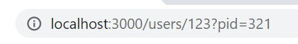

Допустим что нам надо в url записывать id пользователя или записи. В этом случае мы в папку pages создаем папку (например user) и в этой папке создаем файл с вот таким именем [userId].js
Далее в этом файле мы создаем дефолтный компонент, который будет отрисовываться при входе на страницу. И так мы создали папку user и файл [userId].js. Что бы попасть на страницу этого фалйа нужно будет пройти по адресу localhost:3000/user/45 - где 45 это id пользователя.
Как теперь нам на странице получить значение id из url? Очень просто, мы будем использовать хук useRouter который доступен из библиотеки Next JS
После того как импортировали хук нам надо вызвать его и результат присвоить в переменную. В результате мы получим объект
В полученном объект нас интересует параметр query который в свою очередь будет иметь ключ с тем названием как мы назвали файл в квадратных скобках. Мы назвали userId и получили userId в качестве ключа. Если бы назвали babushka, то в качестве ключа получили бы babushka.
К примеру если наш URL будет выглядеть вот так:
Что бы получить значение ключа pid так же из query получаем данные
Пример страница материалов с уроками. т.е. в URL у нас сначала идет ID материала, затем ID урока. Здесь абсолютно такая же логика получения ID. Вот как будет выглядеть построение лиректорий в проекте
Т.е. путь будет выглядеть так: pages/materisl/[materialId]/[lessonId].jsx
Получение данных из URL будет выглядеть вот так:
Все переменные можно получить в массив. Как это будет выглядеть в иерархии директорий проекта:
В таком случае в query будет создан массив newsData, каждый элемент которого будет - переменная из URL
Link - это компонент из Next JS, который позволяет обеспечивать навигацию без перезагрузки страницы.
Router - это встроенный компонент в Туче JS, который позволяет проводить манипуляции с навигацией (push - метод который заменяет текст урла после домена)